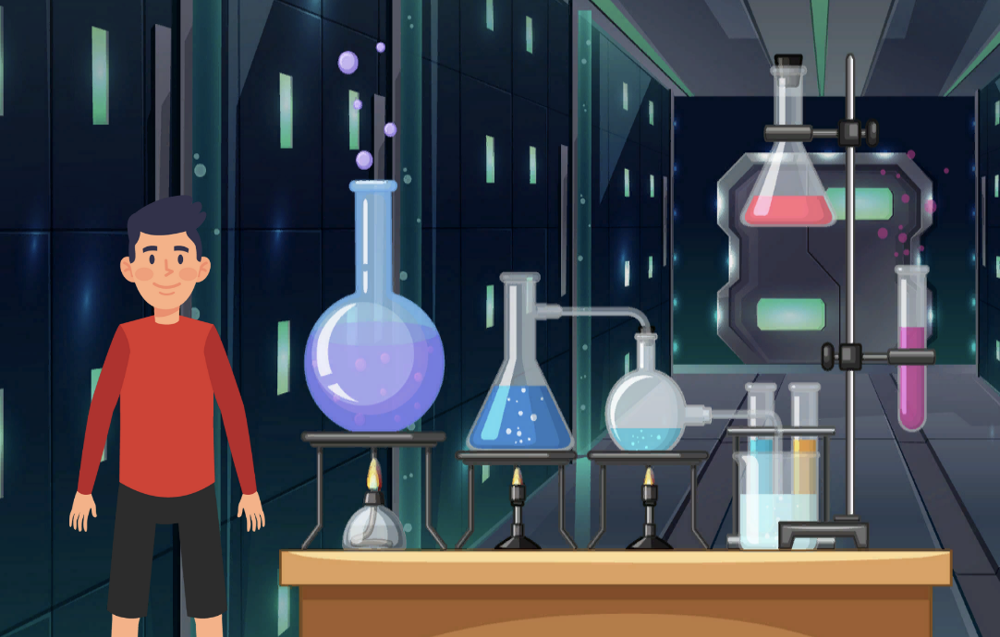
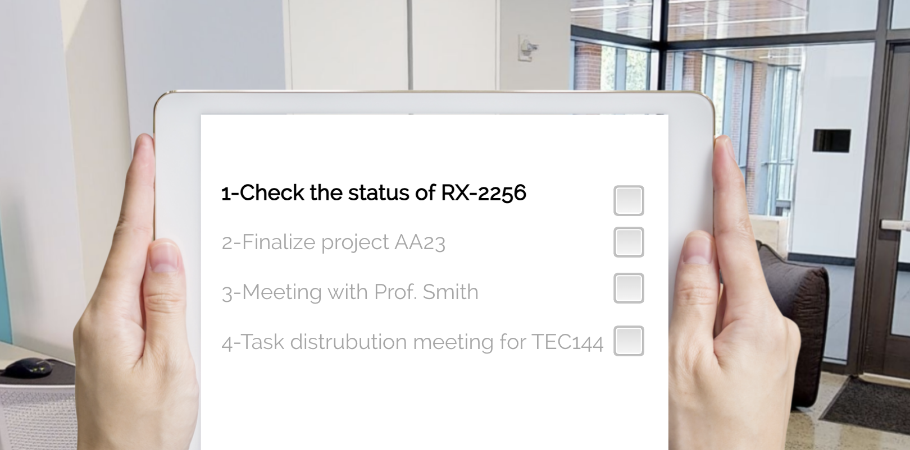
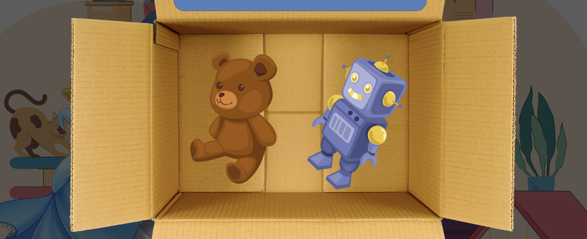

Building AI Tools for Educators,
Designing Objective-Driven Interactions.
A multidisciplinary approach that turns cognitive theory into scalable, user-centric EdTech products and interactive courseware.
Instructional Design & E-Learning

Where is the Toy Treasure?
Escape-room science courseware built in Unity. States of matter & properties of materials, Grade 4.
2023–2025
Project Entropy: A Scenario-Based Corporate Mission
A scenario-based corporate simulation teaching Entropy through an immersive, on-the-job investigation.
2024
Spatial Concepts Adventure
An e-learning module for 1st graders on positional language: in front of, behind, above, and below.
2020Educational Games
Twelve single-file HTML5 prototypes, each scoped to one microlearning objective for teachers to run as a quick, focused activity right after a lesson. Designed and built while working as a Product Manager at Madlen, an AI-in-education platform used by 50,000+ teachers.

Digit Tower ( Basamak Kulesi)
Place value, number comparison & patterns

Volt Lab ( Devre Atölyesi)
Simple electric circuits: build & test

Idiomoji ( Deyimoji)
Turkish idioms through picture clues

Job Quest
English vocabulary: jobs & professions

State Shifters ( Madde Atölyesi)
Properties & states of matter

My Compass ( Keşif Seferi)
Map reading, directions & weather

Feel & Match
English feelings & social-emotional language

Proper Patrol ( Şifre Avı)
Capitalization & punctuation code-breaker

Count Lane ( Sayı Sokağı)
Odd & even numbers street adventure

Action Verbs
English action verbs, fast-paced streaks

Planet Protector ( Dünya Kahramanı)
Environmental awareness & recycling

Talking ABCs ( Sesli Alfabem)
Phonics & letter recognition game